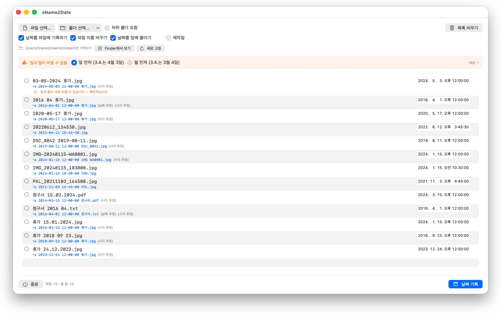
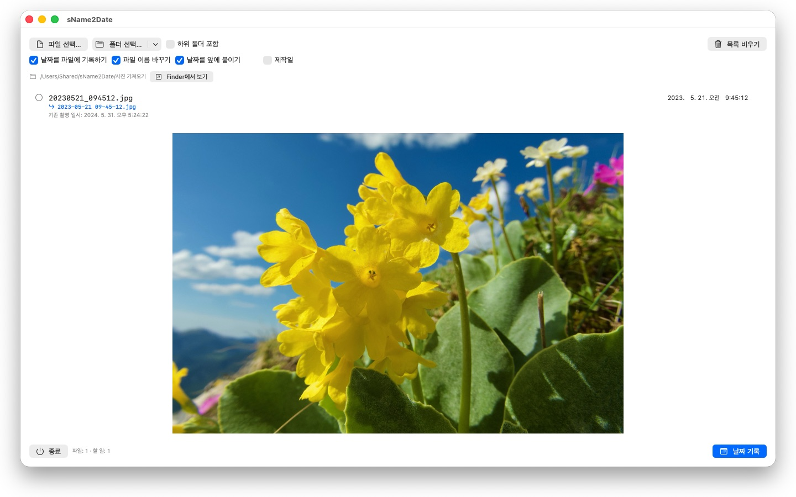

촬영 일시가 없는 사진은 어디에도 제자리를 찾지 못합니다. sName2Date는 파일 이름에서 날짜를 꺼내 모든 사진 관리 프로그램이 찾는 자리에 기록합니다.


많은 사진과 동영상이 날짜를 파일 이름에 담고 있습니다. 하지만 프로그램이 날짜를 찾는 자리는 그곳이 아닙니다. 메신저 대화나 스캐너, 오래된 자료 보관함에서 가져온 사진은 IMG_20240115_103000.jpg나 휴가 15.01.2024.jpg 같은 이름을 달고 있고, 어떤 사진 관리 프로그램에서든 오늘 날짜로 표시됩니다.
sName2Date는 파일 이름에서 날짜를 읽어 파일 안에 촬영 일시로 기록합니다. 아직 촬영 일시가 없으면 새로 만들어 넣습니다.
인식하는 표기 형식
날짜와 시각의 흔한 표기들을 인식합니다. 예를 들면 다음과 같습니다.
- 2024-01-15 10-30-00
- IMG_20240115_103000
- IMG-20240115-WA0001
- 2024-01-15 · 2024 01 15 · 2024_01_15
- 15.01.2024 · 15-01-2024 · 15.01.24
- January 15 2024 · 15 Jan. 2024 — 글자로 적은 달 이름
- 2016 04 · 04-2016 — 연도와 달만 있는 경우
글자로 적은 달 이름은 시스템 언어와 영어로, 긴 형태와 줄인 형태 모두 읽습니다. 한국어는 달을 1월처럼 숫자로 적으므로 글자로 된 달 이름이 없습니다. 따라서 이 규칙은 영어 이름에만 해당하며, 한국어 파일 이름의 날짜는 위에 든 숫자 표기로 적혀 있을 때 인식됩니다.
이름에 날짜만 있으면 시각은 정해진 값으로 채워집니다. 어떤 값을 쓸지는 직접 정합니다. 날짜에서 일까지 빠져 있으면 그달의 1일로 보며, 목록의 해당 줄이 그 사실을 함께 알려 줍니다. 이름에 날짜가 여러 개 있으면 앞선 것이 이깁니다. 그리고 일과 달을 서로 바꿔 읽을 수 있는 경우에는 설정한 방식을 따르되, 해당 파일에는 따로 표시가 붙습니다. 조용히 넘겨짚지 않습니다.
이름에 날짜가 아예 없으면 목록의 오른쪽 칸에 직접 입력하면 됩니다. 1826년까지 거슬러 올라갑니다. 현존하는 가장 오래된 사진이 찍힌 해입니다. 그러므로 19세기에 찍혀 스캔된 사진도 어제 찍은 사진과 똑같이 날짜를 붙일 수 있습니다.
무엇이 바뀌는가
기록되는 항목은 EXIF DateTimeOriginal과 DateTimeDigitized, 그리고 TIFF DateTime이며, 동영상과 음성 녹음에서는 컨테이너 안의 생성 일시입니다. 원한다면 파일 자체의 생성일과 수정일도 함께 맞춥니다.
이미지 데이터는 손대지 않습니다. JPEG를 다시 압축하지 않고, 동영상을 다시 인코딩하지 않습니다. 동영상과 음성 녹음에서는 대개 컨테이너의 몇 바이트만 고쳐 쓰므로, 용량이 큰 동영상도 순식간에 끝납니다.
촬영 일시를 담을 수 있는 형식은 JPEG, PNG, TIFF, HEIC, GIF와 동영상 형식 MP4, MOV, M4V, 그리고 음성 형식 M4A, M4B입니다.
촬영 일시를 담을 수 없는 파일도 함께
PDF나 텍스트 파일, 표 계산 문서에는 촬영 일시를 적을 칸 자체가 없습니다. 그래도 목록에는 들어옵니다. sName2Date는 그런 파일에 파일 자체의 생성일과 수정일을 설정합니다. 날짜가 남을 수 있는 유일한 자리이기 때문입니다. 해당 줄에는 그것이 초록색이 아니라 주황색 체크로 표시됩니다. 그러므로 여기서는 확장자를 가리지 않습니다. PDF, 텍스트, 표 계산, 압축 파일 등 무엇이든 됩니다.
파일에 아예 손대지 않으려면 창 위쪽의 ‘날짜를 파일에 기록하기’ 체크를 해제하면 됩니다. 그러면 sName2Date는 이름만 ISO 표기로 고칩니다. 청구서 15.03.2024.pdf는 2024-03-15 12-00-00 청구서.pdf가 됩니다. Finder에서 그 폴더는 날짜순으로 정렬됩니다. 원한다면 날짜를 앞으로 옮기지 않고 이름 안의 원래 자리에 그대로 둘 수도 있습니다.
모두 되돌릴 수 있습니다
한 번의 작업은 Cmd+Z로 온전히 되돌릴 수 있습니다. 촬영 일시, 파일의 시각 정보, 바뀐 파일 이름까지 모두 해당합니다. Cmd+Shift+Z로 다시 실행합니다.
폴더 전체
sName2Date는 하위 폴더까지 포함한 폴더 전체를 한 번에 처리하고, 이미 촬영 일시가 있는 파일은 건너뛸 수 있습니다. 한 번 접근을 허용한 폴더는 기억해 두므로 다시 묻지 않습니다.
sName2Date Lite · 무료 — 한 번에 파일 하나를 다루는 버전: 파일 이름의 날짜를 촬영 일시로 사진, 동영상 또는 오디오 녹음에 기록하고, 직접 설정하고, 이름을 ISO 형식으로 바꾸고, 모든 것을 ⌘Z로 되돌립니다 — sName2Date와 같은 기능이지만 폴더 전체는 다루지 않습니다.
- macOS 12 이상 필요
- 24개 언어 지원
- 지원: SwiftAppsBavaria@gmx.net
다른 앱
sCollectPlay
미디어 라이브러리를 위한 플레이어: 간단히 폴더, iTunes XML 또는 sCollect 미디어 라이브러리에서 음악, 영화, 오디오북, 팟캐스트를 재생합니다 — 이때 파일의 태그는 전혀 변경되지 않습니다. 재생 목록과 오디오 및 자막 트랙을 지원하며, 영화는 슬로 모션과 프레임 단위 이동도 가능합니다. MKV, AVI, DSD처럼 macOS가 직접 재생하지 못하는 형식은 외부 플레이어로 넘깁니다.
sCollectPlay Lite
sCollectPlay의 간결한 버전: 간단히 폴더, iTunes XML 또는 sCollect 미디어 라이브러리를 열어 음악, 영화, 오디오북, 팟캐스트를 재생합니다 — 재생 목록과 오디오 및 자막 트랙, 슬로 모션과 프레임 단위 이동을 지원합니다. 세션당 하나의 소스만 사용할 수 있으며, 열 브라우저, 사용자 재생 목록, 최근 사용한 소스는 정식 버전 전용입니다.
sBikeBridge
포털에 업로드하지 않고 자전거 라이딩을 분석합니다: 이 형식으로 기록하는 모든 사이클 컴퓨터의 FIT 파일과 GPX, TCX를 불러옵니다. 라이딩 기록은 Mac의 자체 라이브러리에 저장됩니다 — 지도, 파워, 심박수, 사진, 메모와 함께; 중복 항목은 가져오기 과정에서 인식됩니다. 연도별·월별 주요 지표와 거리, 상승 고도, 시간 필터로 라이딩을 비교할 수 있습니다. 원하면 지도를 오프라인으로도 사용할 수 있습니다.